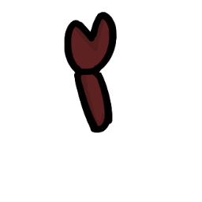
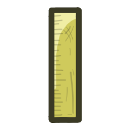
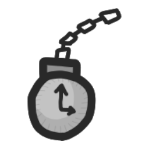
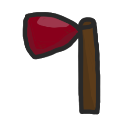
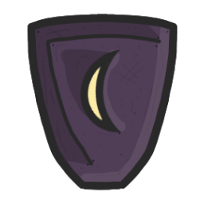

Accessories
6 entries
 Crab Leg | 15 | All classes | — | 15,000 |
 Ruler | 15 | All classes | Jump height +5 | 5,000 |
 Stopwatch | 15 | All classes | Speed +5 | 5,000 |
 Hackey Sack | 20 | All classes | — | 15,000 |
 Luck Charm Luck Charm | 30 | All classes | Luck +2 | 200,000 |
 Moon Shield | 45 | All classes | Luck +2 | 200,000 |
No entries match these filters.
Worth is the base catalog value. Shop prices and sell prices appear on item pages.